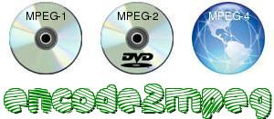

the mpeg frontend
encode2mpeg is a front end to MPlayer/MEncoder
and mjpegtools. It is able
to convert any kind of video that mplayer can play in a format suitable
for VCD/SVCD/DVD, plus it can create avi containing mpeg video.
The program has the following capabilities:
- VCD
- mpeg1 video with constant or variable bit rate
- mp1, mp2 or mp3 audio stream
- CD-i compatibility
- SVCD
- multiple audio streams (mp1,mp2,mp3,ac3,dts or lpcm)
- subtitles (from SPU streams, Vobsub and text subtitles)
- DVD
- multiple audio streams (mp1,mp2,mp3,ac3,dts or lpcm)
- subtitles (from SPU streams, Vobsub and text subtitles)
- VCD/SVCD/DVD
- Mpeg Multichannel Audio (mp2 5.1)
- aac single stream audio
- custom quantization matrices (kvcd, tmpgenc)
- mpeg video encoding with mpeg2enc or mencoder (1/2/3 pass)
- copy of audio and/or video stream from a mpeg source
- predictable file size
- chapters
- menu
- Avi
- fast 1/2 pass mode
- high compression 2/3 pass mode
- high quality 2/3 pass mode
- single audio mp2, mp3, aac, ac3, pcm stream
- multiple audio mp3, ac3 streams
- copy of audio and/or video stream from the source
- custom lame/libavcodec options
- predictable file size
- automatic scaling
- vobsub extraction (from a dvd source)
- subviewer (srt) subtitle extraction (from DVD, SVCD, Vobsub
source)
- custom quantization matrices (kvcd, tmpgenc)
- DivX/MPEG-4 profiles
- MPEG-4 encoding with libavcodec or xvid
Documentation
The README is the first document to read. The online help lists all the options, the long online help describes
all the options. The rest of the documentation is in these html pages.
Read them
carefully.
In any moment you can read the html documentation running:
encode2mpeg -doc
Online help specific to a particular option can be showed giving help as option argument:
encode2mpeg -addchapter help
The html page describing a particular option can be viewed giving doc as option argument:
encode2mpeg -addchapter doc
Usage
encode2mpeg has different working mode. Click on the links below to see
how to choose and select the appropriate mode.
Other features:
Options Check
- encode2mpeg will detect
an incorrect option on the command line. If you are using a valid
MPlayer option and encode2mpeg does not recognize it, you can disable
options checking by adding '-toolopts mplayer'. Everything after
'-toolopts' is assumed to be a valid option/argument and passed to the
specified tool.
Disk Space
- Temporary disk space usage is about 2 times the size of the
final stream. When using the option -addsub, temporary disk space usage
is 2 times the size of the final stream plus the size of the input
stream. Be sure to have enough free space on your disk. encode2mpeg
does
not
check for sufficient free disk space.
Input audio stream
- If the input stream contains more than one audio stream, it is
always better to select explicitely the audio stream you want with the
option -aid. If you do not do it, it may happen that MPlayer will chose
one audio stream, but MEncoder will pick another one for the encoding.
A/V sync problems
- Sometimes the mpeg stream created with encode2mpeg has a/v sync
problems. This can happen with some input streams (like Real and WMV)
but not with all of them. In general it is possible to solve the
problem in this way: use Mpeg Mode and add one of -mc 0/-mc 0.1/-mc 10 to your command
line.
The last version is 0.6.4,
released 2007-10-18. RPM can
be found here.
What's new
Since version 0.6.1 encode2mpeg has been developed with MPlayer 1.0rc1.
Next relase
will be 0.7.0 and will support MPlayer 1.0rc2.
0.6.4
Default menu
are in 16/9 noletterbox now
Buxfixes, code cleanup, several small improvements
0.6.3
0.6.2
Anime/Cartoon optimization
More avi
profiles
xvid encoding support (-vcodec xvid)
Bugfixes, MPlayer 1.0rc1 support
0.6.0
0.5.7
0.5.6
Bugfixes
0.5.5
0.5.4
0.5.3
0.5.2
Code cleanup, no new features
0.5.1
SVCD/DVD subtitles from text sources
Bugfix
Fully supporting
KVCD specifications
Created the mailing list:
encode2mpeg-users
Burning of the output stream to a ISO dvd disk
Easy creation of standard VCD/SVCD/DVD (-stdvid)
Verify of the burned disk
User selectable video codec (-vcodec)
Faster encoding in Mpeg Mode (using the MEncoder muxer)
0.4.x
Video rotation and TV overscan removing
Menu
Encoding different source video in one
disk
Cache support
Copy of audio streams of different type
to SVCD/DVD
dts and mp1 audio
Turbo mode for 2/3 pass encoding in Avi
Mode and Mpeg Mode
0.3.x
VCD/SVCD/DVD chapters, subtitles and
aspect ratio fix
Mpeg Mode
Interlace support
html documentation
See the Changelog for a more detailed list.
Support
The main way to get support or ask questions is through the mailing
list
Bugreport
in order to fix bugs as quick as possible, please follow these simple
rules before submitting a bugreport.
- Always be sure to use the last release. A bug you have found may
have already been fixed.
- Check if you have enough free disk space. If disk space is
insufficient unpredictable behavior may happen.
- Add to encode2mpeg the option -debug.
- Compress and send me, togheter with your bugreport, the log file
and the debug file.
send your bugreport to the addresses: encode2mpeg
at users.sourceforge.net , encode2mpeg
at email.it
Feedback
Users' comments about encode2mpeg can be read here. I am looking for some euro coins, can you help me?
Help
Although I try to keep the documentation as much as possible accurate,
I do not have the time to extend/improve it. If somebody wants to
help me with this task, I will gladly accept the help.